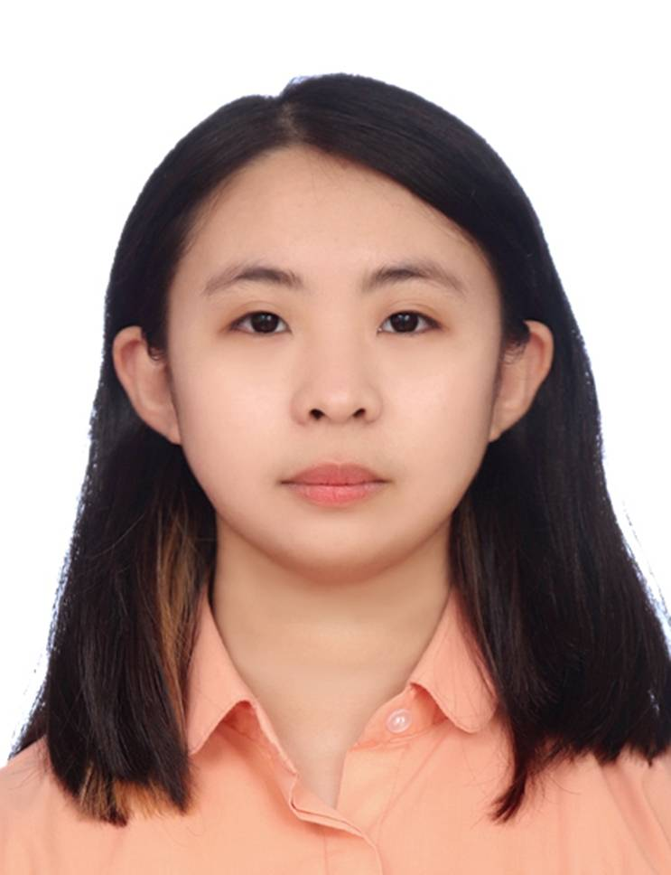

Ana Chang
進入靜宜大學資訊管理學系後，我接觸了程式設計、網頁設計、資料庫、ERP及資訊管理等課程， 從課堂實作與專題中逐漸發現自己對運用資訊科技解決問題很有興趣。 在製作專題時，我擔任組長，主要負責整理成員想法、規劃整體方向及提出修改建議， 過程中讓我發現自己比起單純撰寫程式，更喜歡分析需求、整合不同想法並協助團隊完成目標。 參與黑客松等競賽也讓我累積了面對問題、討論解決方案與團隊合作的經驗， 確立自己對資訊專案管理、系統規劃與科技應用等方向的興趣。